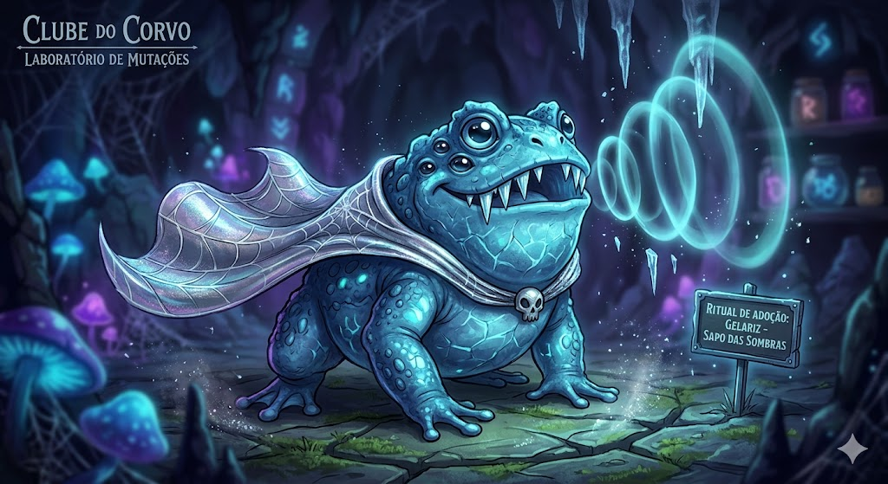
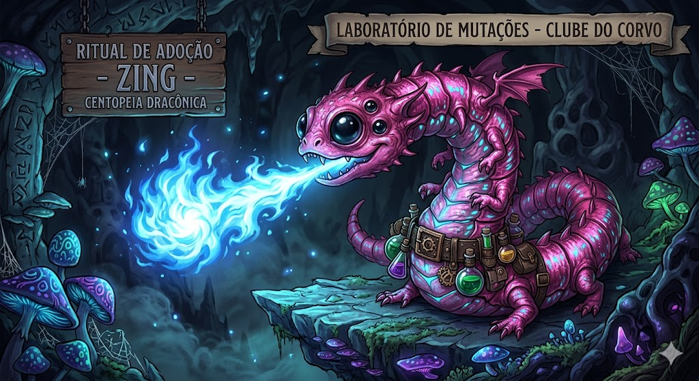

Gelariz, o Escorpião Dimensional
Com sua bandana de caveirinha e olhos que brilham como reatores, Edgar não apenas guarda o laboratório — ele abre portais para dimensões que você prefere não conhecer. A garra esquerda invoca. A direita decide.
💎 1 Pena de Cristal

Junior, Filhote do Mundo Invertido
Nando saiu do Mundo Invertido de jaqueta de couro e piercings de morceguinho. Sua cara de flor carnívora intimida qualquer um — até você perceber que ele só quer um carinho e um cogumelo bioluminescente.
💎 1 Pena de Cristal

Rhino, a Lagartixa das Botas Arcanas
Frostbite usa botas steampunk e tatuagens tribais que brilham no frio. Seu sopro transforma insetos em cristais de gelo que flutuam pelo ar. Já tem plaquinha com o próprio nome no covil — ela sabe exatamente quem é.
💎 1 Pena de Cristal

Zing, o Morcego da Meia-Noite
Pingo pousa em lápides com elegância e sorriso safado. Suas asas têm veias de roxo neon que pulsam com a lua crescente. O piercing na orelha é detalhe — o que impressiona mesmo é a fumaça roxa que ele sopra quando está de bom humor.
💎 1 Pena de Cristal
<
Jonatan, a Aranha de Três Olhos
Stela tem três olhos violeta que enxergam além do visível, espinhos de prata no abdômen e tatuagens neon que percorrem cada uma das suas oito patas. Ela não assusta — ela deslumbra. Mas é melhor não pisar na teia.
💎 1 Pena de Cristal

Jeninho, a Cientista do Fogo Azul
Kira usa um monóculo steampunk e dispara raios laser pelo olho esquerdo quando fica curiosa — que é sempre. Seu laboratório tem placas com o próprio nome catalogado. Ela mesma se classificou como Specimen Kira, Mutation V-3. Modéstia zero.
💎 1 Pena de Cristal